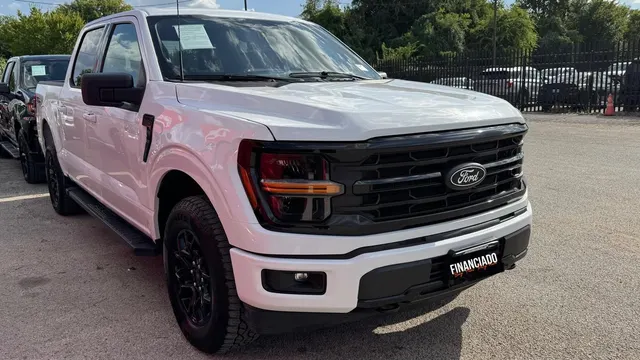

2025 Ford F-150 FX4
White • ID CCH-16

1/2General
| Year | 2025 |
| Make | Ford |
| Model | F-150 FX4 |
| Type | Truck |
| Color | White |
| Mileage | 41,000 miles |
| Seats | 5 or 6 seats |
Engine & transmission
| Engine | 2.7L EcoBoost Twin-Turbo V6 |
| Power | 325 hp |
| Torque | 400 lb-ft |
| Transmission | 10-speed automatic |
| Drivetrain | 4x4 |
| Fuel | Gasoline |
Capacities
| Fuel tank | 36 gal |
| Fuel economy | 18 city / 23 highway |
Dimensions
| Length | 227.7 in |
| Width | 79.9 in |
| Wheelbase | 141.0 in |
Body
| Cab | Regular Cab |
| Bed | 8.0 ft |
| Stock wheels | 17 in |
Visible in the photos
- Crew cab
- Running boards
- Black wheels
- All-terrain tires
- FX4 package
Great for
Heavy-duty work and dirt roads, practically new.
Specs for this model/trim per manufacturer and automotive media. Confirm this unit’s exact specs with the dealer.
FX4 es un paquete off-road, no un trim: se reporta el motor base de la F-150 2025 según CarsDirect (2.7L EcoBoost V6: 325 hp / 400 lb-pie, automática SelectShift de 10; 5.0L V8 y 3.5L EcoBoost opcionales). Tracción 4x4 confirmada (el paquete FX4 exige 4x4).
FX4 es un paquete 4x4, no un trim; la clave no indica cabina ni caja. Se usó la configuración base Regular Cab con caja de 8 pies y 2.7L EcoBoost 4WD (ficha de concesionario Ford; EPA 2025). El remolque y el payload varían por configuración y no se verificaron para esta combinación. La altura exacta 4x4 tampoco se verificó.